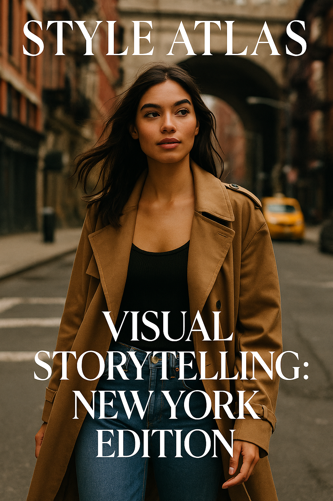
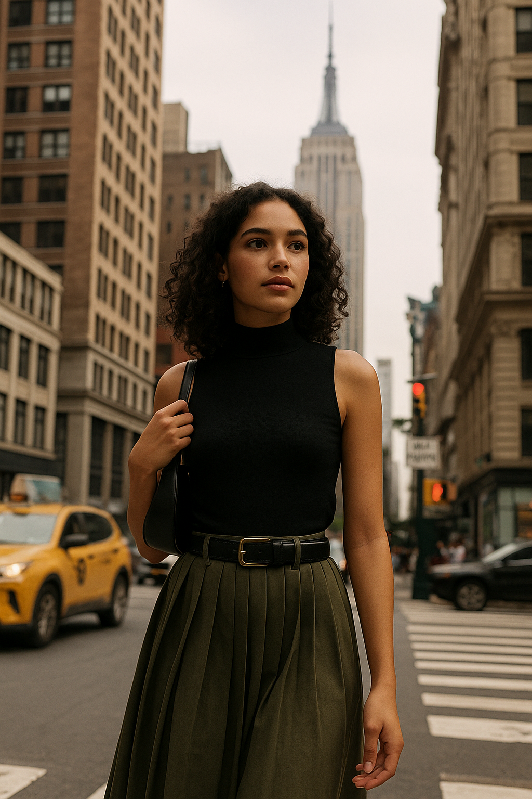
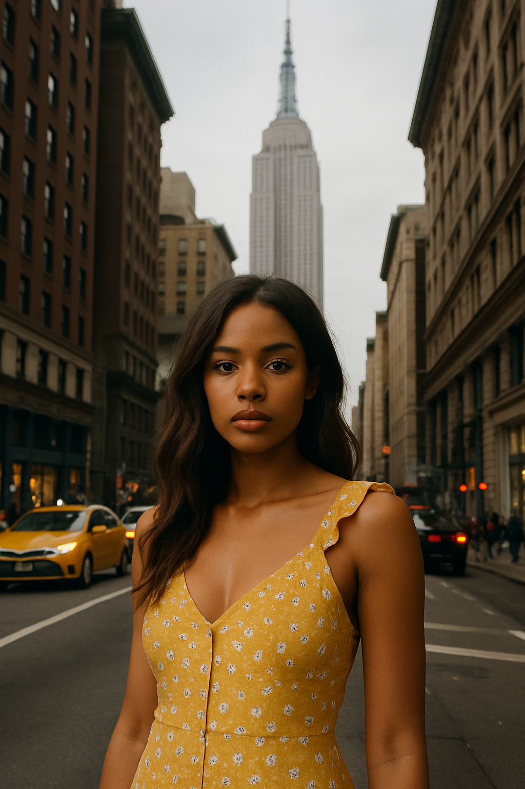

Visual Storytelling: New York Edition
Every outfit in NYC tells a story—of a mood, a moment, or a memory. This is where fashion and narrative walk side by side.
New York doesn’t dress. It speaks. Every corner of the city carries visual sentences—scratched leather jackets on a subway pole, lavender silk trousers brushing against gum-stained sidewalks, a chipped manicure tapping through playlists on the Q train. This isn’t just fashion. It’s visual storytelling.
"In New York, everyone is the main character of their own aesthetic novel." — Elodie Crane, NYC-based stylist
The Language of Clothing in NYC
Fashion in New York is rarely pristine. It’s curated chaos. It’s not about perfection but expression. A half-tucked shirt says, “I left in a rush, but I wanted you to notice.” A ripped sleeve? “This jacket has seen things.” The city demands movement, and movement breeds authenticity. Wrinkles, scuffs, contrast—these are not flaws. They’re footnotes.
The city’s style isn’t trend-driven—it’s narrative-driven. You’re not just wearing a trench coat. You’re wearing a mood. A memory. A subway ride. A missed connection. A rooftop at 3 a.m.
5 NYC Style Archetypes with Stories Built In
- The Disillusioned Romantic: Lace slip over boots, oversized headphones, carrying a novel too damaged to be borrowed.
- The Gallery Drifter: All black. Layers in linen and vinyl. Smells like bergamot. Looks like they left a meeting they weren’t in.
- The Delirious Commuter: Tech sneakers, vintage suit trousers, coffee on coat. Texting something poetic and chaotic.
- The Nostalgic It-Girl: ’90s denim, lip liner, thrifted Coach shoulder bag, silent confidence.
- The Brooklyn Blur: Tank top, silver jewelry, vintage Adidas, hair tied with shoelace. Always walking fast, never sweating.
The sidewalk is the sentence. The outfit is the punctuation.
How New York Wears Emotion
More than any other city, NYC layers emotion into outfits. The way a scarf is tied says more than its brand. The eyeliner smudged by humidity becomes a visual metaphor. Even posture becomes styling—shoulders forward, chin up, bag under arm, like armor.
"New York style isn’t just about what you wear. It’s how you carry your mood through fabric." — Noa Kim, visual editor
Visual Storytelling Through Texture
New Yorkers are texture poets. Wool meets satin. Denim meets mesh. Tulle under puffer coats. Texture creates narrative friction—softness against resistance. A stiff pleated skirt tells a sharper story next to a beat-up hoodie. A velvet glove on a chipped nail. Fashion becomes literature written in fabric tension.
Fashion that edits itself on the go, like dialogue mid-scene.
The Influence of Film + Street Cinema
NYC style draws from film—Wong Kar-Wai’s longing, Spike Lee’s urgency, Greta Gerwig’s lo-fi wit. Outfits often feel composed like a scene: a plaid skirt crossing Delancey, a trench flicking open in the wind of an A train departure, a pair of hands tightening a scarf while walking alone through SoHo. The city turns clothes into cutaways, into character development.
Places Where Stories Collect
- Union Square: Skate kids in flared cargos and chain wallets, girls in low-slung vintage Levi’s and glossy lips.
- Lower East Side: Silver chains over utility shirts, cigarette breaks in platform boots, headphones always on.
- Bushwick Rooftops: Crochet tank tops, micro minis with socks, sun-faded overalls. Looks made for watching the city glow.
- Harlem Sundays: Flowy skirts, printed scarves, linen sets with family creases and fresh white sneakers.

Every crosswalk is a narrative arc. Every coffee shop, an edit room.
Why Visual Storytelling Matters Now
In a post-trend, post-hype world, story has become the new luxury. What do your clothes say without logos? What do they remember? Who were you when you first wore that jacket? Who noticed? NYC fashion isn’t dressing for approval—it’s dressing for memory.
Style Atlas Tip:
Next time you get dressed in New York—or anywhere—ask not what looks good. Ask: what story am I about to tell?
Style is how New York speaks—wordless, restless, unforgettable.
Words by Style Atlas